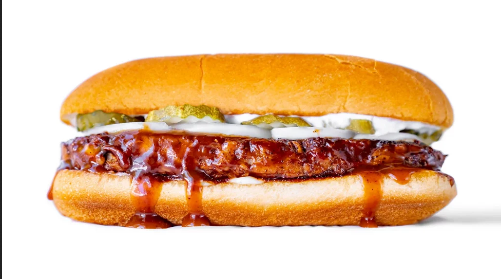

Vegan McRib

THIS version of the McRib is without a doubt super dang tasty! I made a bunch of leftovers and me and my girlfriend subsisted on them for a couple days, and we never got burnt out. I even ate some of the McRib patties cold straight from the fridge and dunked them in BBQ sauce! It was that good!
Ingredients
- 24 oz. plant-based meat (like Impossible or Beyond)
- 14 oz. can of jackfruit (not in the syrup or the sweet kind!)
- Hoagie Rolls
- Dill Pickle Slices
- 1 Onion (sliced pole to pole)
- BBQ sauce (recipe for scratch BBQ sauce below)
Dry Rub
- 1/4 cup brown sugar
- 1 tsp smoked paprika
- 1 tsp chipotle powder
- 1 tsp garlic powder
- 1 tsp onion powder
- 1 tsp salt
- Black pepper to taste
Aioli (rough estimates as I made this to taste)
- 1/2 - 3/4 cup vegan mayo
- 3 cloves garlic (minced)
- Lemon juice to taste (I used 1 Tbsp + 1 tsp)
- Salt and pepper to taste
Instructions
- Prepare the dry rub by combining the ingredients. Adjust to taste and set aside.
- Prepare the aioli the same way. I recommend starting off conservative with the lemon juice and adjust to your taste.
- Drain and rinse the jackfruit. Add it to a steamer basket and steam for 10 minutes. Once steamed, chop up roughly. You can discard the seeds and tough bits, but I just chop them up or smoosh them with my fingers.
- Combine the jackfruit with the plant based meat thoroughly.
- To form your patties, weigh out about 6 oz. of the jackfruit / meat mixture per patty. Use some parchment paper so they don't stick to the surface, and form your patties with your hands. Make sure you have a hoagie roll nearby so you can shape them to the same length and width of the roll.
- Place your patties in the fridge while we fire up the grill.
- Fill a chimney with coals and light a tumbleweed starter or some old newspapers to get the chimney lit. Once coals are ashed over, dump them into one half of your BBQ kettle, so we'll have a hot area and a cooler area on the grill.
- Let the grill heat up, then clean it with a brush. Dab a paper towel with some oil and use some tongs to grease up the grill.
- Get your patties and season them liberally with the dry rub. Lightly press the seasoning into the patties.
- Add your hoagie rolls to the cooler side of the grill, then add your McRib patties to the hotter side. Keep an eye on your rolls and make sure they don't burn, remove them once they're nicely toasted. Cook the patties for about 3 to 4 minutes, then flip them. Once flipped, brush on as much BBQ sauce as you like. Then flip again after another 3-4 minutes, and brush the other side with BBQ sauce. You can repeat this process as much as you like, but I found that just once on each side was perfect.
- Remove patties from grill, then dress the bottom bun with some of the aioli, add the McRib, top with onions and pickles, more aioli, and then the top bun.
- ENJOY!